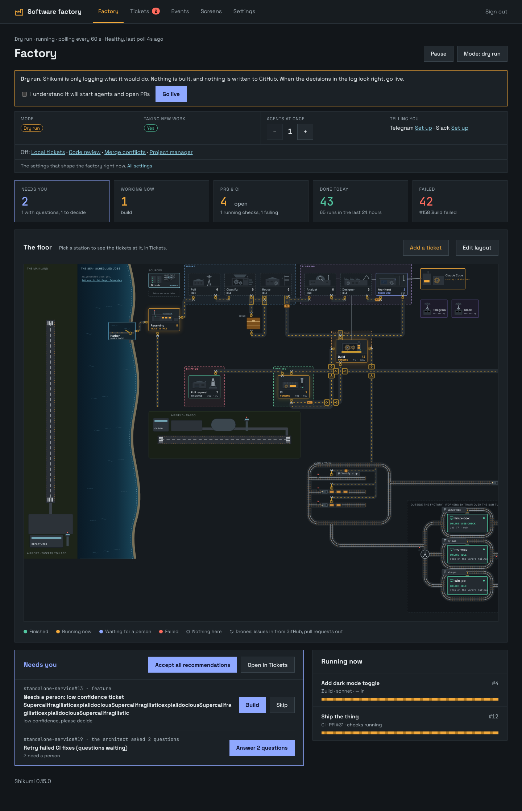

Shikumi is a software factory you run yourself. Sandboxed AI agents analyse, design, plan and build your GitHub issues. You stay in the loop and review every PR.
curl -fsSL https://github.com/theninjadojo/software-factory/releases/latest/download/install.sh | bashPut a label on an issue. A team of specialist agents picks it up, each one handing a document to the next, until a pull request lands in front of you.
Writes requirements, acceptance criteria and the open questions, right on the ticket.
Plans flows, states and copy. With Claude Design canvases it even opens a draft PR of mockups.
Lays out the data model, API and the order to change repos in, before a line is written.
Edits your repos and opens one cross-linked PR per repo. All or nothing: if one patch is rejected, none are pushed.
A second agent, ideally from a different model family, reads the PRs and posts a structured review. It never approves or merges.
Watches your own CI, reports pass or fail, and can give the agent a fix round with the failing logs.
Not sure which stage a ticket needs? Add factory:auto and a classifier picks the next stage, skips the ones it can, and only stops to ask you when a person is genuinely needed.
Every ticket is a small drone travelling along the belts from intake to a pull request. See what is running, what is waiting for you and what failed, at a glance. You can even redraw the floor.

Alerts, Run and Skip buttons, answers to the agent's questions, and /status /pause /resume. Only your id is obeyed.
Web, mobile and shared packages are one workspace. One ticket can change them all.
Optionally build and test a patch on a Mac or any machine you own before it is pushed.
We assume the agent will be prompt-injected by something it reads. So we made that not matter.
factory/* branches onlyYou need a Linux host with Docker, a GitHub account for the factory (a bot account is best), and an Anthropic API key. About fifteen minutes.
One command downloads the release, pulls the prebuilt images and runs a guided setup that checks your GitHub token, your credentials and every repo as it goes.
curl -fsSL https://github.com/theninjadojo/software-factory/releases/latest/download/install.sh | bash
The setup prints a URL, usually http://127.0.0.1:8787. Sign in with the password you chose. It starts in dry-run: the factory logs what it would do and writes nothing to GitHub.
Pick something low-risk, like “Add a Contact link to the footer”, and label it. Start with factory:analyze to see the first agent at work.
When the decisions in the log look right, press Go live. Agents open pull requests, your CI runs, and you merge what you like. Protect main with required reviews: that is the real control.
Shikumi is a working prototype, run for real on one multi-repo project. Know the edges before you point it at anything you care about.
The sandbox has no network, so agents can't install dependencies or run tests. Your CI is the real check, or add a verification worker.
A hijacked agent can still write bad code. The factory only pushes factory/* branches, but you decide what merges.
It is the supported route for unattended use. Subscription tokens work, but their terms are a gray area, so decide for yourself.
Self-hosted, no account with us, no telemetry. Read all of it, change all of it.
Install it, label one issue, and see what comes out the other end.